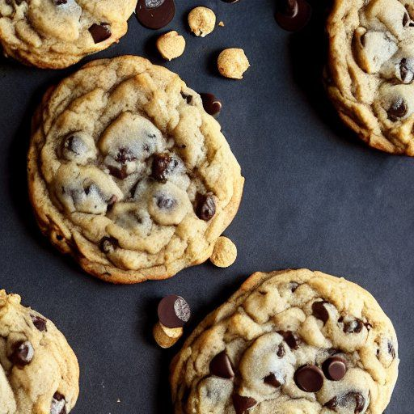

Cowboy cookies
Préparation: 10 minutes
Cuisson: 8 minutes
Total: 18 minutes
Ingrédients
-
1 t de beurre mou

-
1 t de sucre
-
1 t de cassonade
-
2 oeuf
-
2 t de farine
-
1 c. à thé de bicarbonate de soude
-
1/2 c. à thé de sel
-
1/2 c. à thé de poudre à pâte
-
1 c. à thé d'extrait de vanille
-
2 t de flocons d'avoine
-
1 t de noix de coco râpée
-
1 3/4 t de brisures de chocolat
Instructions
Crémer ensemble
- 1 t de beurre mou
- 1 t de sucre
- 1 t de cassonade
- 2 oeuf
Ajouter
- 2 t de farine
- 1 c. à thé de bicarbonate de soude
- 1/2 c. à thé de sel
- 1/2 c. à thé de poudre à pâte
Ajouter
- 1 c. à thé d'extrait de vanille
- 2 t de flocons d'avoine
- 1 t de noix de coco râpée
- 1 3/4 t de brisures de chocolat
Cuire au four à 350 °F pendant 7 à 9 minutes.